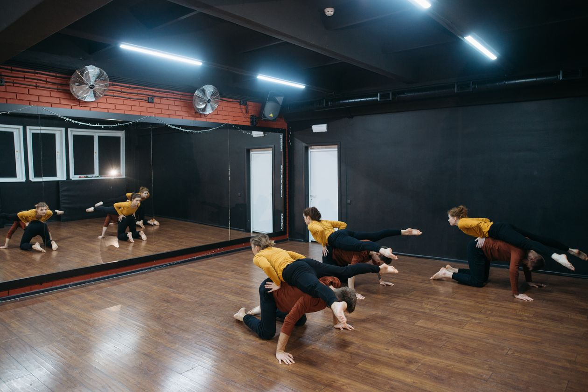
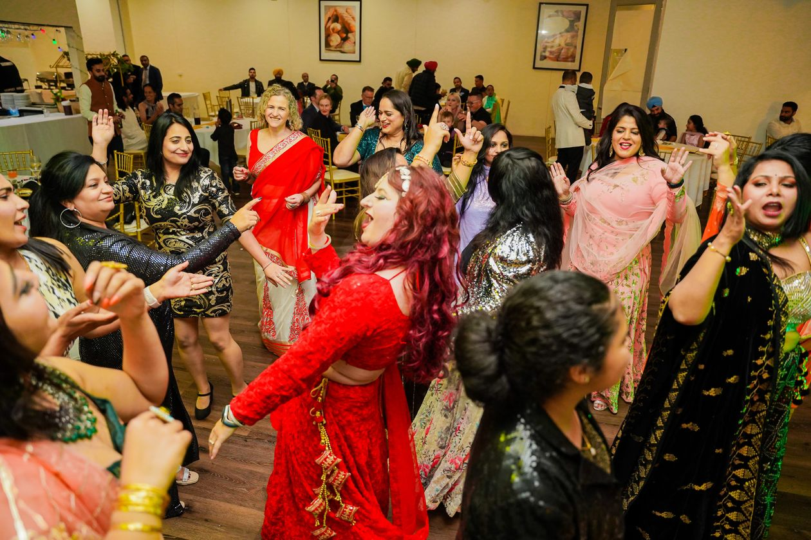
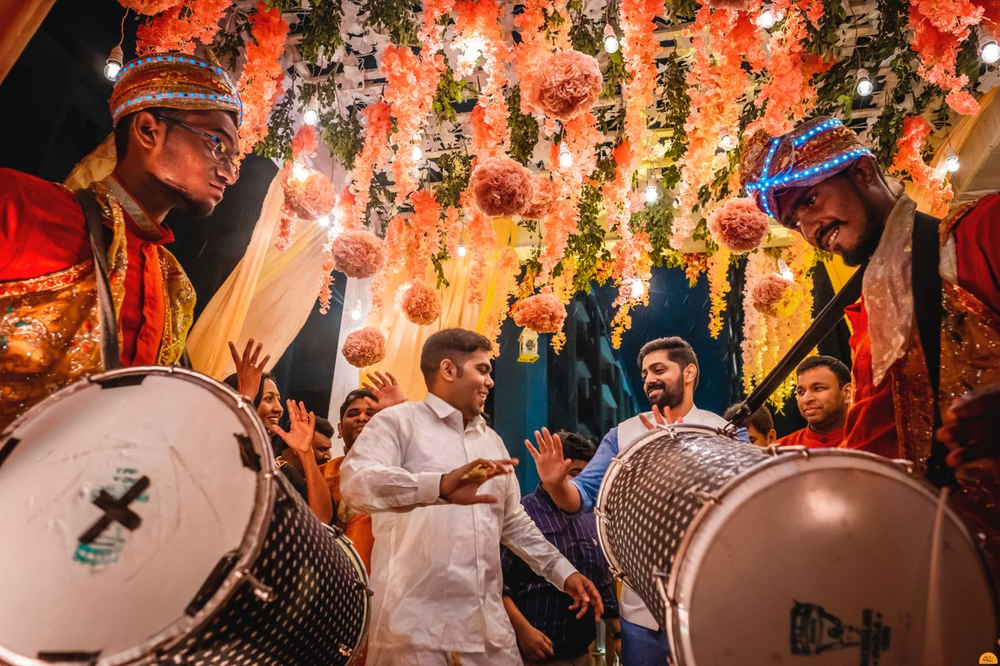

A hook step is sixteen counts a wedding hall can do.
Sana Qureshi choreographs film songs, sangeet productions and stage shows — and teaches rooms full of non-dancers to perform them in weeks. The steps are hers; the songs belong to their composers and productions, and this site says so every time.
41
Productions since 2014
Film, stage, sangeet and academy terms.
96
Songs & numbers staged
Of 23 film songs: 9 as lead, 14 as assistant — the split is printed, never blurred.
63
Sangeet families taught
Every one a room of non-dancers, taught in their own hall or home.
3.
Numbers dropped mid-production
Counted here, and written up in the work — read the dropped number.
Rehearsal hours are the product. Count them first.
Every production is planned from the three printed tables below — the same tables this tool reads. A phrase is one 8-count block of steps. Teaching a phrase to a trained troupe and teaching it to a sangeet family are different jobs, so they carry different minutes, in print.
| Group class | Min / 8-count phrase | Min / formation change |
|---|---|---|
| Trained troupe | 12 | 6 |
| Mixed group | 20 | 10 |
| Non-dancer family (sangeet) | 35 | 15 |
| Production type | Formation changes / song |
|---|---|
| Film song | 6 |
| Stage number | 4 |
| Sangeet number | 3 |
The printed rules
- One session is 120 minutes of floor time — warm-up and water included, because they are not optional.
- Three sessions a week is the most a working family or a working troupe can honestly hold.
- Add one polish week. Teaching must end the week before the date; the last week is for one full run, rest, and costumes.
- A second choreographer halves the floor time — two rooms, two halves of the group — and is billed, not hidden (see fees).
- A lost session is a lost session. The plan below has no slack in it unless the verdict says it does.
Plan a production
Set the production. The workings update line by line, from the tables above.
Production type
Who is on the floor
Songs / numbers
Phrases per song (8-count blocks)
Weeks until the date
- Phrase teaching—
- Formation teaching—
- Total floor time—
- Sessions of 120 minutes—
- Teaching weeks at 3 sessions / week—
- Calendar, incl. 1 polish week—
—
—
Every rehearsal starts on the count.
This is the tempo tool from Sana's own rehearsals: a synthesised clave at the printed tempo, with the count on screen — 5 · 6 · 7 · 8, then two bars. In the studio the counts are called aloud over it; here the screen keeps the numbers honest. It plays sixteen counts and stops itself. It is a practice tool, not music — no song is played, sampled or implied.
| Floor | Tempo |
|---|---|
| Sangeet standards | 92 BPM |
| Stage medleys | 112 BPM |
| Film hooks | 120 BPM |
Sound ruling for this site: the count-in is the only audio, it starts only on your tap, it runs at a fixed low level, and it stops itself after sixteen counts. Everything else here is silent, by design.
Pick a tempo, press play. Sixteen counts, then it stops itself.
Formations are drawn before they are danced.
A formation is a promise the floor makes to the camera. Sana draws every change as a diagram before the first rehearsal, because sixteen dancers cannot be re-blocked by shouting — and a sangeet family of fourteen should never have to guess where to stand.
- Count 1 is home. Every formation is numbered from the first count of the phrase, so a missed step has a way back.
- The change is the hook. Audiences remember movement between shapes, not shapes.
- Mirror first, camera second. Steps are taught to the mirror, then re-taught to the lens — they are not the same dance. More on the about page.
What is on the floor right now
| Service | Client | Production | Role | Status |
|---|---|---|---|---|
| Film song choreography | Independent feature | “Platform No. 9”, from Station Road Romeo | Lead | Completed · 2025 |
| Film song choreography | Studio feature | River song, feature in post-production (title in the production's credits) | Assistant | Completed · 2024 |
| Sangeet production | Private family, Pune | Bhatia–Fernandes sangeet — 4 numbers, 14 non-dancers | Lead | Completed · Nov 2025 |
| Stage show | Touring production | Silver Screen Nights — medley, incl. one dropped number | Lead | Completed · 2024 |
| Academy teaching | Dance academy, Andheri | Weekend Bollywood batch — 12-session terms | Teacher | Ongoing |
| Sangeet production | Private family, Mumbai | Ahuja family sangeet — 3 numbers | Lead | Booked · Feb 2027 |
Roles are printed per engagement because they are not interchangeable: a lead choreographer answers for the steps; an assistant teaches what another choreographer set. This register never blurs the two.
The price is a table, not a phone call.
| Line | Rate |
|---|---|
| Lead choreography — film song, per song | ₹85,000 |
| Lead choreography — stage number, per number | ₹60,000 |
| Lead choreography — sangeet number, per number | ₹45,000 |
| Assistant choreographer, per production week | ₹7,500 |
| Rehearsal floor coordination, per session (at cost) | ₹1,200 |
What moves the price
- Group class, first. A non-dancer family takes roughly three times the floor minutes of a trained troupe — run the planner above; it is the same arithmetic the quote uses.
- Calendar, second. Under four weeks to the date, a second choreographer joins the floor and is billed at the assistant rate per week plus a second per-song line at 80% — agreed before the first session, never added after.
- Song count and travel. Each added song is a full per-song line. Outside Mumbai, the floor and travel are passed through at cost, with receipts.
Estimate a booking
An estimate from the printed fee table — the same table this tool reads. A quote follows a conversation and a date; this is the shape of it, not a booking.
Production type
Songs / numbers
Rehearsal floor sessions
Assistant choreographer weeks
- Choreography—
- Floor coordination—
- Assistant choreographer—
- Estimate—
Deposit: 40% to hold the calendar, balance across the rehearsal weeks. Cancellation and the illness-replacement rule are printed on the about page.
“Platform No. 9” — the hook the crane rebuilt
The brief was an eight-count hook for a railway-platform song in the independent feature Station Road Romeo. On the floor, the camera told the truth: the crane pull-back needed four counts of travel the step didn't have. The hook was rebuilt to sixteen counts in one afternoon — and the sixteen-count version is the one that stayed. The full case, with the formation diagram and the counts, is in the work.
“She rebuilt the hook in an afternoon because the crane needed four more counts — and the sixteen-count version is the one the audience hums on the way out.”
— Rohan Vardaan, producer, Station Road Romeo (fictional production), on the “Platform No. 9” shoot, 2025

What the counts become


The first question is the date.
Tell the studio the date, the songs, and who is dancing — the planner on this page has already shown you the honest shape of the answer. One path, no forms in triplicate: